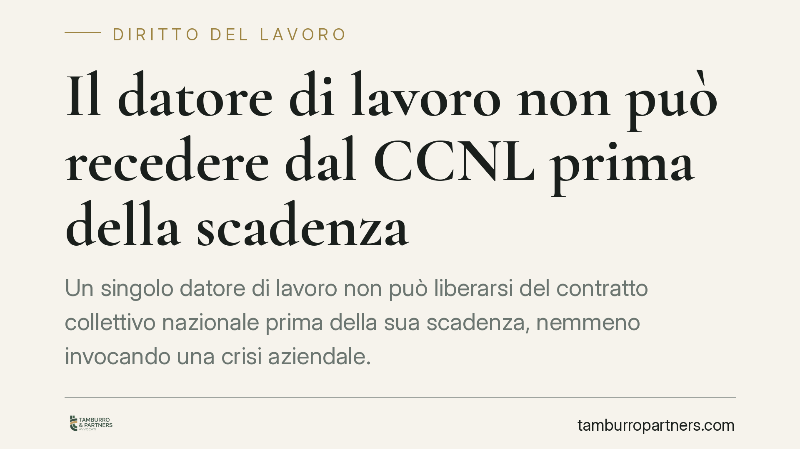

Il datore di lavoro non può recedere dal CCNL prima della scadenza
Un singolo datore di lavoro non può liberarsi del contratto collettivo nazionale prima della sua scadenza, nemmeno invocando una crisi aziendale. La Cassazione precisa che la disdetta unilaterale è ammessa solo per gli accordi di secondo livello. Il recesso illegittimo espone l'azienda a differenze retributive e, nei casi di pretesa infondata, a responsabilità processuale aggravata.

Il caso
Una struttura sanitaria privata, in difficoltà economica, ha comunicato ai lavoratori la volontà di non applicare più il contratto collettivo nazionale (CCNL) di categoria, riducendo di conseguenza i trattamenti retributivi. La Cassazione, Sezione Lavoro (ordinanza il cui estremo numerico è da verificare presso le fonti ufficiali, trattandosi di dato non ancora consolidato), ha escluso che questa condotta sia legittima.
Il principio è netto: il recesso da un contratto collettivo nazionale non è una facoltà del singolo datore. La crisi d'impresa, per quanto reale, non autorizza a disapplicare unilateralmente ciò che è stato negoziato a livello nazionale tra le organizzazioni sindacali e datoriali.
Inquadramento normativo
Il punto di partenza è l'efficacia vincolante del contratto tra le parti: ai sensi dell'art. 1372 c.c., il contratto ha forza di legge tra i contraenti e non può essere sciolto per volontà di uno solo. Il CCNL vincola il datore che vi aderisce (direttamente o tramite associazione di categoria) fino alla sua naturale scadenza o alla disdetta esercitata nelle forme previste dal contratto stesso.
Va segnalato che l'art. 2074 c.c., storicamente richiamato in tema di ultrattività e disdetta del contratto collettivo, nasce nel sistema corporativo e la sua applicabilità ai CCNL di diritto comune è discussa in dottrina e giurisprudenza. Non costituisce quindi, da solo, il fondamento della decisione: il perno è piuttosto il regime generale dell'efficacia contrattuale, letto alla luce dell'art. 39 Cost. sulla libertà e sull'autonomia sindacale. La contrattazione nazionale è espressione collettiva: non può essere svuotata dall'iniziativa del singolo aderente.
Diverso è il piano degli accordi di secondo livello (aziendali o territoriali). Questi, in quanto frutto di una contrattazione più prossima all'impresa, possono essere disdettati secondo le regole in essi contenute. È qui, non sul livello nazionale, che si colloca il margine di manovra del datore in difficoltà.
Implicazioni pratiche
Per le aziende la distinzione è decisiva. Il CCNL non è disponibile su base individuale: chi smette di applicarlo espone l'impresa a un rischio concreto di condanna alle differenze retributive, cioè alla restituzione di quanto i lavoratori avrebbero percepito con la corretta applicazione del contratto.
Si aggiunge un profilo ulteriore. Quando il datore agisce o resiste in giudizio con una pretesa manifestamente infondata, può incorrere nella responsabilità aggravata prevista dall'art. 96 c.p.c.: il giudice può condannare la parte soccombente che abbia agito con mala fede o colpa grave al risarcimento dei danni, oltre alle spese. Non si tratta di una sanzione automatica, ma di una conseguenza possibile dell'uso distorto dello strumento processuale.
Per i lavoratori, il punto di attenzione è il tempo. I crediti retributivi sono soggetti a prescrizione quinquennale ai sensi dell'art. 2948, n. 4, c.c.: trascorso tale termine, il diritto a ottenere le somme non corrisposte si estingue. Agire tempestivamente è quindi essenziale per non compromettere le pretese maturate.
Cosa fare in concreto
Se sei un datore di lavoro in difficoltà:
- Non disapplicare il CCNL su iniziativa unilaterale: verifica scadenza e clausole di disdetta del contratto applicato.
- Concentra ogni intervento sugli accordi di secondo livello, rispettando le procedure di disdetta previste.
- Apri un confronto negoziale con le organizzazioni sindacali per rinegoziare condizioni sostenibili: la via contrattuale è l'unico canale corretto per gestire la crisi.
Se sei un lavoratore:
- Confronta la tua busta paga con le tabelle retributive del CCNL applicabile e verifica eventuali scostamenti.
- Agisci senza attendere: ricorda la prescrizione quinquennale dei crediti retributivi.
- Raccogli e conserva comunicazioni aziendali, cedolini e documentazione utile a ricostruire il trattamento dovuto.
La decisione conferma un assetto chiaro: il contratto nazionale si modifica negoziando, non disapplicandolo. La crisi d'impresa va affrontata nelle sedi corrette, con gli strumenti che l'ordinamento mette a disposizione delle parti.
---
*Contributo informativo a cura di Tamburro & Partners - Avv. Giuseppe Tamburro. Non costituisce parere legale.*
Ogni storia di lavoro ha i suoi tempi.
Se gestisci HR e vuoi un confronto su contenzioso, ispezioni o licenziamenti, scrivi allo studio. Ti rispondiamo entro un giorno lavorativo.